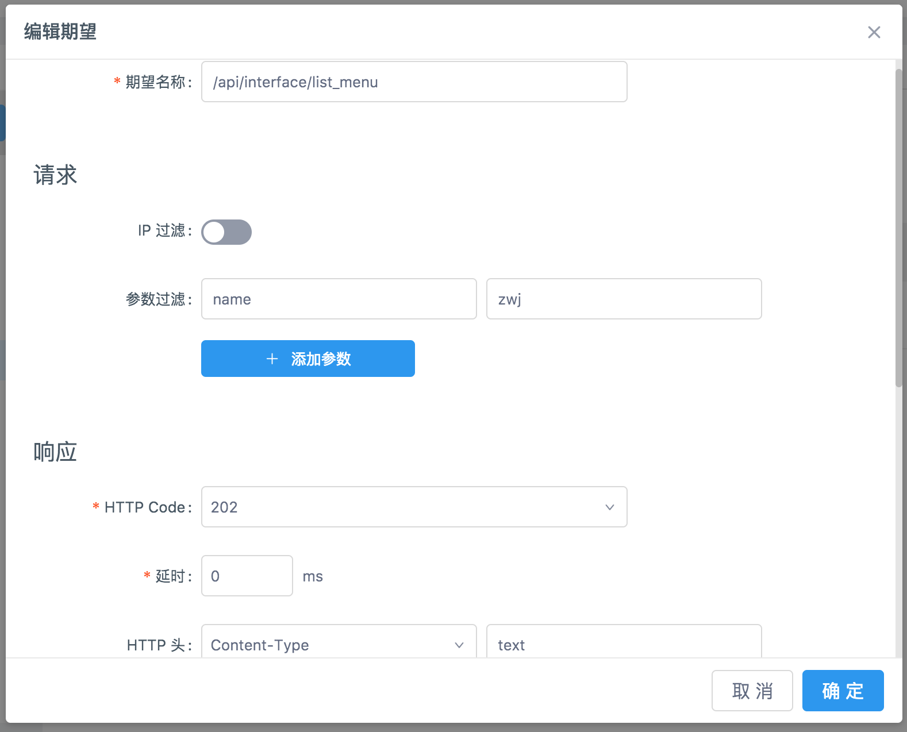

<!DOCTYPE html>
<html lang="zh-CN">

<head>
    <title>YApi 接口管理平台 使用手册</title>
    
        <meta name="keywords" content="api管理,接口管理,接口文档,api文档">
    
    
        <meta name="description" content="YApi 是高效、易用、功能强大的 api 管理平台，旨在为开发、产品、测试人员提供更优雅的接口管理服务。可以帮助开发者轻松创建、发布、维护 API，YApi 还为用户提供了优秀的交互体验，开发人员只需利用平台提供的接口数据写入工具以及简单的点击操作就可以实现接口的管理。">
    

    <link rel="shortcut icon" href="./images/favicon.ico" />
    <link rel="stylesheet" href="source/main.css" />
    
    
      
      <link rel="stylesheet" href="styles/theme.css" />
      
    
    <meta charset="UTF-8">
    <meta name="viewport" content="width=device-width,minimum-scale=1.0,maximum-scale=1.0,user-scalable=no" />
    <meta name="format-detection" content="telephone=no,email=no" />
    <meta http-equiv="X-UA-Compatible" content="ie=edge, chrome=1">
</head>
<body>
    <div class="ydoc">
        <header class="ydoc-header">
            <div class="ydoc-header-area">
                
                <a href="./index.html" class="navbar-brand"> &nbsp;YAPI</a>
                
                <button class="ydocIcon navbar-toggle">&#xf020;</button>
                <nav class="ydoc-nav">
                    <ul class="navbar-left">
                         
                        <li class="">
                            
                            <a href="index.html"></a> 
                        </li>
                        
                        <li class="active">
                            
                            <a href="usage.html">使用手册</a> 
                        </li>
                        
                        <li class="">
                            
                            <a href="devops.html">内网部署</a> 
                        </li>
                        
                        <li class="">
                            
                            <a href="plugin.html">插件 Wiki</a> 
                        </li>
                        
                        <li class="">
                            
                            <a href="qa.html">常见问题</a> 
                        </li>
                        
                        <li class="">
                            
                            <a href="releases.html">版本记录</a> 
                        </li>
                        
                        <li class="">
                            
                            <a href="http://yapi.demo.qunar.com/" target="_blank">demo 站点</a> 
                        </li>
                        
                        <li class="">
                            
                            <a href="api.html"></a> 
                        </li>
                         
                    </ul>
                </nav>
            </div>
        </header>
        
        <!-- <header style="height:20px"></header> -->
        
        <!-- Docs page layout -->
        
        <div class="ydoc-banner-bg">
            <div class="ydoc-banner ">
                <div class="ydoc-banner-area">
                    <h1 >YApi</h1>
                    <p class="desc ">高效、易用、功能强大的api管理平台，旨在为开发、产品、测试人员提供更优雅的接口管理服务。</p>
                    
                </div>
            </div>
            

            <div class="ydoc-container">
                 
                <div class="ydoc-container-content ">
                    
                    
                    <div class="content-left staticsidenav" role="complementary">
                        <nav class="docs-sidebar hidden-print hidden-xs hidden-sm">
                            <ul class="nav docs-sidenav">
                                 
                                <!-- <li  > -->
                                <li >
                                    
                                    <a href="getfamiliar.html">认识 YApi</a> 
                                </li>
                                  
                                <!-- <li  > -->
                                <li >
                                    
                                    <a href="quickstart.html">创建第一个API</a> 
                                </li>
                                  
                                <!-- <li  > -->
                                <li >
                                    
                                    <a href="manage.html">管理分组与项目</a> 
                                </li>
                                  
                                <!-- <li  > -->
                                <li >
                                    
                                    <a href="project.html">项目操作</a> 
                                </li>
                                  
                                <!-- <li  > -->
                                <li >
                                    
                                    <a href="interface.html">接口操作</a> 
                                </li>
                                  
                                <!-- <li  > -->
                                <li >
                                    
                                    <a href="mock.html">普通 Mock</a> 
                                </li>
                                  
                                <!-- <li  class="active"   class="active" > -->
                                <li  class="active" >
                                    
                                    <a href="adv_mock.html">高级 Mock</a> 
                                </li>
                                   
                                <ul class="nav docs-sidenav-extend"  >
                                
                                    <li >
                                        <a href="#Mock_期望">Mock 期望</a>
                                    </li>
                                     
                                    <li >
                                        <a href="#自定义_Mock_脚本">自定义 Mock 脚本</a>
                                    </li>
                                     
                                    <li >
                                        <a href="#Mock_优先级说明">Mock 优先级说明</a>
                                    </li>
                                
                                </ul>
                                            
                                <!-- <li  > -->
                                <li >
                                    
                                    <a href="case.html">使用测试集</a> 
                                </li>
                                  
                                <!-- <li  > -->
                                <li >
                                    
                                    <a href="data.html">数据导入</a> 
                                </li>
                                 
                            </ul>
                        </nav>
                    </div>
                    
                    <div class="content-right markdown-body use-sidebar" role="main">

                         <h2 class="subject" id="Mock_期望">Mock 期望 <a class="hashlink" href="#Mock_期望">#</a></h2><p>在测试时，很多时候需要根据不同的请求参数、IP 返回不同的 HTTP Code、HTTP 头和 JSON 数据。</p>
<p>Mock 期望就是根据设置的请求过滤规则，返回期望数据。</p>
<h3 class="subject" id="使用方法">使用方法 <a class="hashlink" href="#使用方法">#</a></h3><ol>
<li>进入接口详情页，点击『高级 Mock』选项。<div class="doc-img-wrapper"></div></li><li>点击『添加期望』，填写过滤规则以及期望返回数据，点击『确定』保存。<div class="doc-img-wrapper"></div>
<div class="doc-img-wrapper"></div></li><li>然后尝试在浏览器里发送符合规则的请求，查看返回的数据是否符合期望。<div class="doc-img-wrapper"></div>

</li></ol>
<h3 class="subject" id="期望填写">期望填写 <a class="hashlink" href="#期望填写">#</a></h3><p>基本信息</p>
<ul>
<li>期望名称：给此条期望命名</li><li>IP 过滤：请求的 IP 是设置的地址才可能返回期望。默认 IP 过滤关闭，任何 IP 地址都可能返回期望。</li><li>参数过滤：请求必须包含设置的参数，并且值相等才可能返回期望。参数可以在 Body 或 Query 中。</li></ul>
<p>响应</p>
<ul>
<li>HTTP Code：期望响应的 HTTP 状态码</li><li>延时：期望响应的延迟时间</li><li>HTTP 头：期望响应带有的 HTTP 头</li><li>返回 JSON：期望返回的 JSON 数据</li></ul>
<h2 class="subject" id="自定义_Mock_脚本">自定义 Mock 脚本 <a class="hashlink" href="#自定义_Mock_脚本">#</a></h2><p>在前端开发阶段，对于某些接口，业务相对复杂，而 UI 端也需要根据接口返回的不同内容去做相应的处理。</p>
<p>YApi 提供了写 JS 脚本方式处理这一问题，可以根据用户请求的参数修改返回内容。</p>
<h3 class="subject" id="全局变量">全局变量 <a class="hashlink" href="#全局变量">#</a></h3><p>请求</p>
<ul>
<li><code>header</code> 请求的 HTTP 头</li><li><code>params</code> 请求参数，包括 Body、Query 中所有参数</li><li><code>cookie</code> 请求带的 Cookies</li></ul>
<p>响应</p>
<ul>
<li><p><code>mockJson</code> 
接口定义的响应数据 Mock 模板</p>
</li><li><p><code>resHeader</code> 
响应的 HTTP 头</p>
</li><li><p><code>httpCode</code> 
响应的 HTTP 状态码</p>
</li><li><p><code>delay</code> 
Mock 响应延时，单位为 ms</p>
</li><li><p><code>Random</code> 
Mock.Random 方法，详细使用方法请查看 <a href="https://github.com/nuysoft/Mock/wiki/Mock.Random">Wiki</a></p>
</li></ul>
<h3 class="subject" id="使用方法">使用方法 <a class="hashlink" href="#使用方法">#</a></h3><ol>
<li>首先开启此功能</li><li>Mock 脚本就是用 JavaScript 对 <code>mockJson</code> 变量修改,请避免被全局变量(httpCode, resHeader, delay)的修改</li></ol>
<h3 class="subject" id="示例1,_根据请求参数重写_mockJson">示例1, 根据请求参数重写 mockJson <a class="hashlink" href="#示例1,_根据请求参数重写_mockJson">#</a></h3><pre><code>if(params.type == <span class="token number">1</span><span class="token punctuation">)</span><span class="token punctuation">{</span>
  mockJson.errcode = <span class="token number">400</span><span class="token punctuation">;</span>
  mockJson.errmsg = 'error<span class="token punctuation">;</span>
<span class="token punctuation">}</span>

if(header.token == 't'<span class="token punctuation">)</span><span class="token punctuation">{</span>
  mockJson.errcode = <span class="token number">300</span><span class="token punctuation">;</span>
  mockJson.errmsg = 'error<span class="token punctuation">;</span>
<span class="token punctuation">}</span>

if(cookie.type == 'a'<span class="token punctuation">)</span><span class="token punctuation">{</span>
  mockJson.errcode = <span class="token number">500</span><span class="token punctuation">;</span>
  mockJson.errmsg = 'error<span class="token punctuation">;</span>
<span class="token punctuation">}</span>
</code></pre><h3 class="subject" id="示例2,_生成高度自定义数据内容">示例2, 生成高度自定义数据内容 <a class="hashlink" href="#示例2,_生成高度自定义数据内容">#</a></h3><pre><code>var a = <span class="token punctuation">[</span><span class="token number">1</span><span class="token punctuation">,</span><span class="token number">1</span><span class="token punctuation">,</span><span class="token number">1</span><span class="token punctuation">,</span><span class="token number">1</span><span class="token punctuation">,</span><span class="token number">1</span><span class="token punctuation">,</span><span class="token number">1</span><span class="token punctuation">,</span><span class="token number">1</span><span class="token punctuation">,</span><span class="token number">1</span><span class="token punctuation">,</span><span class="token number">1</span><span class="token punctuation">,</span><span class="token number">1</span><span class="token punctuation">]</span>

mockJson = <span class="token punctuation">{</span>
    errcode<span class="token operator">:</span> <span class="token number">0</span><span class="token punctuation">,</span>
    email<span class="token operator">:</span> Random.email('qq.com'<span class="token punctuation">)</span><span class="token punctuation">,</span>
    data<span class="token operator">:</span> a.map(function(item<span class="token punctuation">)</span><span class="token punctuation">{</span>
        return Random.city(<span class="token punctuation">)</span> + '银行'
    <span class="token punctuation">}</span><span class="token punctuation">)</span>
<span class="token punctuation">}</span>
</code></pre><h2 class="subject" id="Mock_优先级说明">Mock 优先级说明 <a class="hashlink" href="#Mock_优先级说明">#</a></h2><p>请求 Mock 数据时，规则匹配优先级：Mock 期望 &gt; 自定义 Mock 脚本 &gt; 普通 Mock。</p>
<p>如果前面匹配到 Mock 数据，后面 Mock 则不返回。</p>

                    </div>
                </div>
                 
            </div>
            
        </div>
        
        <footer class="footer">
            <div class="copyright">
                &copy; 2017 <a href="https://ymfe.org">YMFE</a> Team. Build by <a href="http://ued.qunar.com/ydoc/">ydoc</a>&nbsp;
            </div>
        </footer>
    </div>

    
    <div class="open-panel"></div>
    <div class="mask"></div>
     

    <script src="source/main.js"></script>
    <script src="source/app.js"></script>
        

    </body>

</html>
